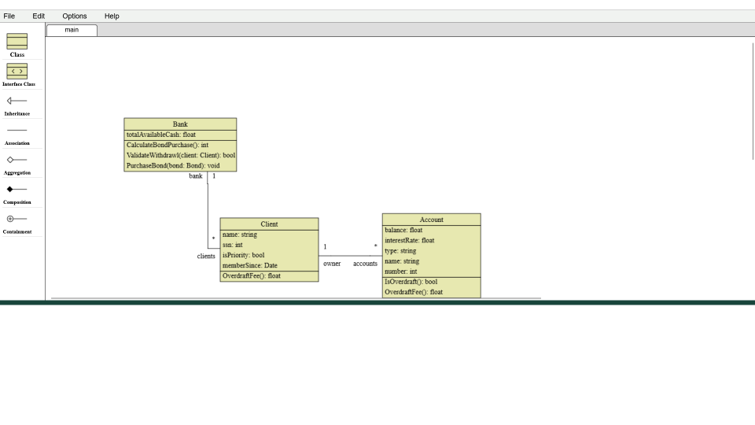

Other Software Projects
Although I have focused focused on game development, I also have experience developing other software, mainly for front-end systems. I have highlighted the best projects below.
clUML
clUML is a web-based UML editor developed for the Michigan State University Computer Science program during the capstone course at the aforementioned program.
The capstone emphasized professionalism and communication above everything else. As part of a small team of five students, we learned how to communicate with corporate-like clients and superiors. That includes how to hold professional work meetings and how to ask for and understand the client's vision of their product.
In addition, I have learned how to utilize Yarn and NPM for Javascript package management, as well as using Node.JS for deploying testing environments. In addition, this marks the first time I have utilized Javascript in a more complex project, which has helped tremendously in my understanding of that language.
ICER Coldfront
I have also worked as a student tech assistant for MSU's Institute for Cyber-Enabled Research to develop improvements for their project management tool Coldfront . I was responsible for a variety of both front end and back end tasks, including skinning the UI to fit MSU design requirements and integrating project export and import.
As one of my first experiences in the professional side of software development, this was an invaluable experience. I was able to apply my skills to a real-world projects used by real users. Such skills I was able to utilize includes Trello and other project management software, source control, and having meetings with superiors in a non-classroom setting.